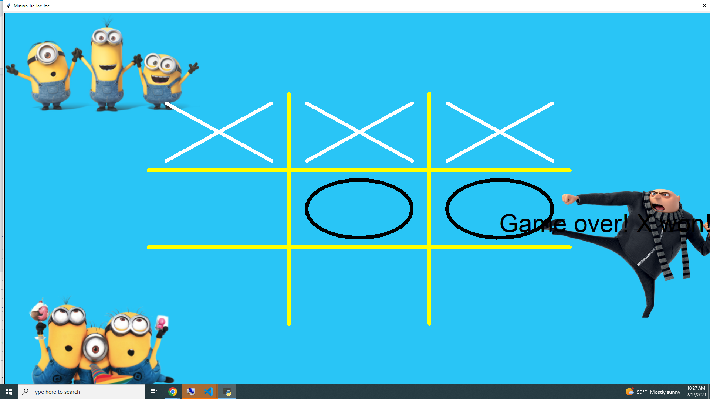
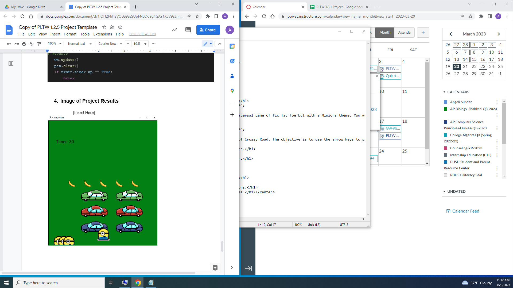
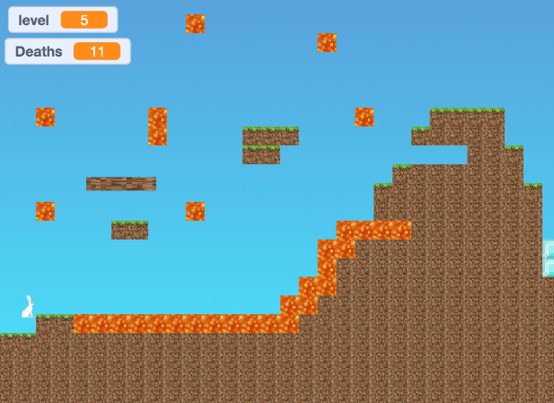

Portfolio
Home
Portfolio
About Me
This is my Portfolio Page!
Project 1.1.9 Minion Tic Tac Toe

The game we created is a very universal game of Tic Tac Toe but with a Minions theme. You will either be using an O or an X against one of your friends. Click on the square you want to place your shape. Be competitive and have fun! We met the requirements by creating loops for the X's/O's and animated the drawing board.
Project 1.2.5 Crossy Minion

The game created was a spin off of Crossy Road. The objective is to use the arrow keys to guide the minion through the game avoiding the cars to get to the bananas. We met the requirements by having a timer and a message pop up at the end to say if you lost or won. We also had strings in the code for collisions with the cars.
Scratch Project (Platformer).

We have a platformer that is controlled by using your mouse. The objective is to get the horse/hare to the diamond blocks and you can see the level counter and death counter in the upper left hand corner. We had costume changes as well for the charcters and backgrounds changed during each level.
Black Jack game written in Python.
Modified bits in pictures.
Use data files to create graphs.
Using netlogo do remix of illusions.
Interactive Fiction Rags to Riches.